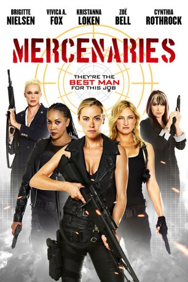

gesehen am 10.06.2015
gesehen am 10.06.2015 
 IMDB-Wertung: 3.7 / 10
IMDB-Wertung: 3.7 / 10  Metascore:
Metascore: 
Eine hochrangige US-Diplomatin wird in einem krisengeschüttelten Konfliktgebiet gefangen genommen und in ein heruntergekommenes Frauengefängnis gesteckt. Dort wird sie auf grauenvolle Art und Weise gefoltert. Da Verhandlungen oder ein Gefangenenaustausch mit der neuen Diktatur keine Option für die amerikanische Regierung darstellen, initiiert diese eine riskante Rettungsaktion. Ein weibliches Elitekommando, u. a. bestehend aus Kat, Clay und Raven, wird in das Gefängnis eingeschleust. Getarnt als mutmaßliche Kriegsverbrecherinnen, müssen sie nicht nur die Gefangene, sondern auch sich selbst aus dem Hochsicherheitstrakt befreien. Bei ihrem gewalttätigen Vorgehen kennen die kampferprobten Frauen keine Skrupel im Umgang mit ihren Feinden.
Jahr: 2014
Dauer: 89 Minuten
FSK: 18
Land: USA Studio: Asylum, TheTonspuren: DTS - ,
Untertitel:
Auflösung: 720p (1280x720) Größe: 3737 MB
Regisseur: Christopher Ray
Drehbuch: Edward DeRuiter
Soundtrack: Chris Ridenhour
Darsteller:
 Zoë Bell als Cassandra Clay
Zoë Bell als Cassandra Clay Kristanna Loken als Kat Morgan
Kristanna Loken als Kat Morgan Vivica A. Fox als Raven
Vivica A. Fox als Raven Brigitte Nielsen als Ulrika
Brigitte Nielsen als Ulrika Gerald Webb als Bobby
Gerald Webb als Bobby Kevin Fry als Jerrod
Kevin Fry als Jerrod Damion Poitier als Webber
Damion Poitier als Webber Carl Ciarfalio als Driver
Carl Ciarfalio als DriverDatei: X:\FSK18-2014\Mercenaries (2014, FSK18, 1280x720) 3D.mkv seit 02.06.2015
Festplatte: FSK18
 Es gibt insgesamt 27 Filme in der Gruppe 'FSK18-2014'
Es gibt insgesamt 27 Filme in der Gruppe 'FSK18-2014'